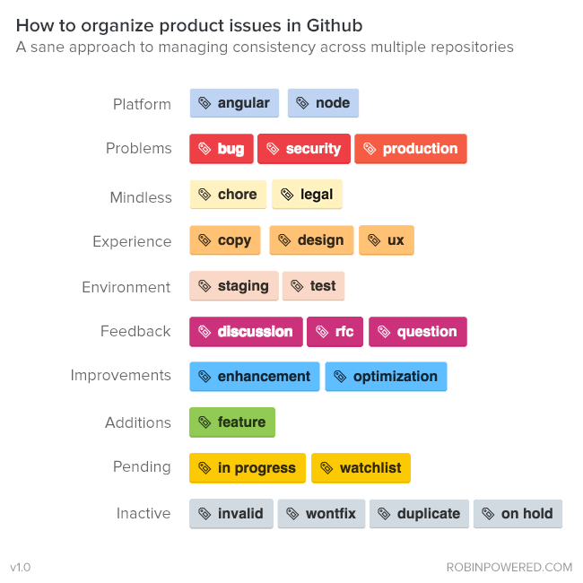
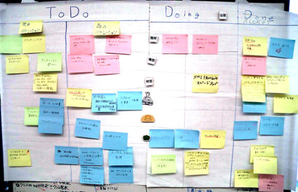
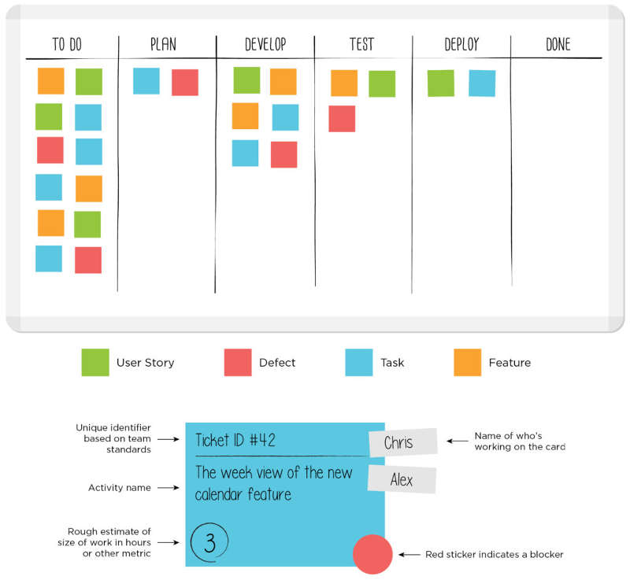

目录
Git Cheat Sheet
CREATE
| description | usage |
|---|---|
| Clone an existing repository | $ git clone ssh://user@domain.com/repo.git |
| Create a new local repository | $ git init |
LOCAL CHANGES
| description | usage |
|---|---|
| Changed files in your working directory | $ git status |
| Changes to tracked files | $ git diff |
| Add all current changes to the next commit | $ git add . |
| Add some changes in <file> to the next commit | $ git add -p <file> |
| Commit all local changes in tracked files | $ git commit -a |
| Commit previously staged changes | $ git commit |
| Change the last commit. Don't amend published commits! | $ git commit --amend |
COMMIT HISTORY
| description | usage |
|---|---|
| Show all commits, starting with newest | $ git log |
| Show changes over time for a specifc file | $ git log -p <file> |
| Who changed what and when in <file> | $ git blame <file> |
BRANCHES & TAGS
| description | usage |
|---|---|
| List all existing branches | $ git branch -av |
| Switch HEAD branch | $ git checkout <branch> |
| Create a new branch based on your current HEAD | $ git branch <new-branch> |
| Create a new tracking branch based on a remote branch | $ git checkout --track <remote/branch> |
| Delete a local branch | $ git branch -d <branch> |
| Mark the current commit with a tag | $ git tag <tag-name> |
UPDATE & PUBLISH
| description | usage |
|---|---|
| List all currently confgured remotes | $ git remote -v |
| Show information about a remote | $ git remote show <remote> |
| Add new remote repository, named <remote> | $ git remote add <shortname> <url> |
| Download all changes from <remote>, but don't integrate into HEAD | $ git fetch <remote> |
| Download changes and directly merge/integrate into HEAD | $ git pull <remote> <branch> |
| Publish local changes on a remote | $ git push <remote> <branch> |
| Delete a branch on the remote | $ git branch -dr <remote/branch> |
| Publish your tags | $ git push --tags |
MERGE & REBASE
| description | usage |
|---|---|
| Merge <branch> into your current HEAD | $ git merge <branch> |
| Rebase your current HEAD onto <branch>. Don't rebase published commits! | $ git rebase <branch> |
| Abort a rebase | $ git rebase --abort |
| Continue a rebase after resolving conflicts | $ git rebase --continue |
| Use your confgured merge tool to solve conflicts | $ git mergetool |
| Use your editor to manually solve conflicts and (after resolving) mark file as resolved | $ git add <resolved-file> |
| $ git rm <resolved-file> |
UNDO
| description | usage |
|---|---|
| Discard all local changes in your working directory | $ git reset --hard HEAD |
| Discard local changes in a specifc file | $ git checkout HEAD <file> |
| Revert a commit (by producing a new commit with contrary changes) | $ git revert <commit> |
| Reset your HEAD pointer to a previous commit …and discard all changes since then | $ git reset --hard <commit> |
| …and preserve all changes as unstaged changes | $ git reset <commit> |
| …and preserve uncommitted local changes | $ git reset --keep <commit> |
Issue
Issue（译"问题"或"事务"）指一项待完成的工作，通常与系统的改进相关：
- 一个软件的bug
- 一项功能建议
- 一项待完成的任务
- 文档缺失的报告
每个Issue应该包含该问题的所有信息和历史，使后来的人只看这个Issue，就能了解问题的所有方面和过程。

Issue起源于客服部门。用户打电话反映问题，客服就创建一个工单（ticket），后续的每一个处理步骤、每一次与用户的交流，都要更新工单，记录全部信息。这就是Issue的前身。
因此，Issue的原始功能是问题追踪和工单管理，后来不断扩展，逐渐演变成全功能的项目管理工具，还可以用于制定和实施软件的开发计划。
专门管理Issue的软件，叫做Issue跟踪管理系统（Issue tracking system）。Issue跟踪管理系统应该具有以下功能：
- 项目管理
- 指定Issue的优先级
- 指定Issue所在的阶段
- 分配负责Issue的处理人员
- 制定日程
- 监控进度，提供统计
- 团队合作
- 讨论
- 邮件通知
- 代码管理
- 将Issue关联源码
- 将Issue关联代码提交与合并
基本使用
每个Github代码仓库都有一个Issues面板。

进入该面板，点击"New Issue"按钮，就可以新建Issue。

上图是新建Issue的界面，左侧填入Issue的标题和内容，右侧是四个配置项（只有项目管理者才能看到）。
- Assignees：人员
- Labels：标签
- Projects：项目
- Milestone：里程碑
Assignees
Assignees选择框用于从当前仓库的所有成员之中，指派某个Issue的处理人员。

Labels
Issue可以贴上标签，这样有利于分类管理和过滤查看。

常用 Label
对于大型项目，每个Issue至少应该有两个Label，一个表示性质，另一个表示优先级。
性质Label：

优先级Label：
- 高优先级（High）：对系统有重大影响，只有解决它之后，才能去完成其他任务。
- 普通优先级（Medium）：对系统的某个部分有影响，用户的一部分操作会达不到预期效果。
- 低优先级（Low）：对系统的某个部分有影响，用户几乎感知不到。
- 微不足道（Trivial）：对系统的功能没有影响，通常是视觉效果不理想，比如字体和颜色不满意。
Milestone
Milestone，"里程碑"，用作Issue的容器，相关Issue可以放在一个Milestone里面。常见的例子是不同的版本（version）和迭代（sprint），都可以做成Milestone。
新建Milestone：
在Issues面板的首页，点击Milestones按钮；

接着再点击New milestone按钮，然后填写Milestone的名称和内容，还可以指定到期时间。
全局视图
Issues面板只能查看和操作当前仓库，Github还提供全局视图，让用户查看和操作所有与自己相关的Issue。
访问github.com/issues，就可以打开全局视图。里面的Issue分成三类：

- Created：你创建的Issue
- Assigned：分配给你的Issue
- Mentioned：提及你的Issue
Created和Assigned的含义显而易见，Mentioned是指他人在Issue里面@了你：
It looks like the new widget form is broken on Safari. When I try and create the widget, Safari crashes. This is reproducible on 10.8, but not 10.9. Maybe a browser bug?/cc @kneath @jresig
全局视图还提供了搜索、过滤和排序功能:

看板功能
看板（Kanban）是敏捷开发的重要手段，主要用于项目的进度管理。所有需要完成的任务，都做成卡片，贴在一块白板上面，这就是看板。

常见的可将项目周期分成三列：
- Todo （待开发）
- Doing （开发中）
- Done （已完成）
可以根据实际情况，分出更多的列：

- Todo（待安排）
- Plan（计划）
- Develop（开发）
- Test（测试）
- Deploy（部署）
- Done（已完成）
Github的看板功能
Github提供Issue看板：
首先，在仓库首页进入Projects面板；

然后，点击New Project按钮，新建一个Project，比如"2.0 版"；
- 接着，点击Add column按钮，为该项目新建若干列；
最后，将Issue分配到对应的列，就新建成功了一个看板视图。

Issue可以从一列拖到另一列，表示从一个阶段进入另一个阶段。